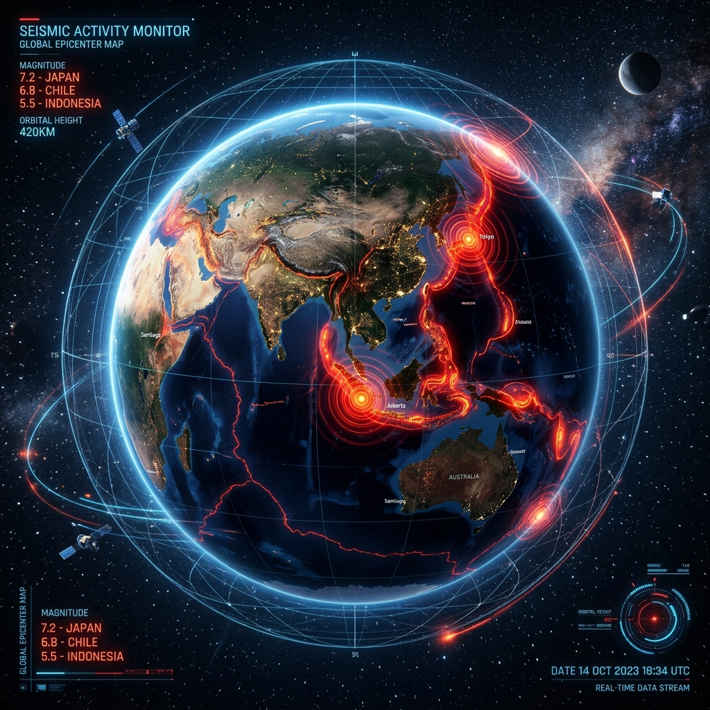

Real-time ingestion from global geophone sensor networks and live USGS / European-Mediterranean Seismological arrays. Decomposes tectonic ruptures into distinct P-Wave, S-Wave, and Surface Ray waves to calculate magnitude ($M_w$), depth, and early warning intervals.

P-waves travel at 6–8 km/s through the mantle with longitudinal compression. The neural discriminator filters 0.5–20 Hz frequencies to lock the focal inception point within 120ms.
S-waves travel at 3.5–4.5 km/s and cannot penetrate liquids. The telemetry engine projects the shear arrival envelope to trigger automated pipeline valves and transit halts.
Rayleigh and Love waves cause elliptical ground rolling and horizontal shear responsible for structural resonant building collapse during major shallow seismic events.